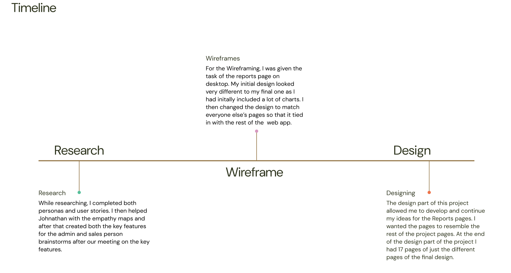

Our goal is to bring the Anachem team (esspecially the sales people) into the digital world.
Switching Anachem's sales team from a paper based system to a digital system with a custom web app would
make their work smoother and more efficient. This app would let them keep track of tasks, log sales, and
record orders—all in one place. It would also give them instant access to reports and organize their contacts,
so everything they need is right at their fingertips. By streamlining their daily tasks into one easy-to-use
platform, the team can save time, stay organized, and focus more on building strong relationships with clients.
It's a practical step toward modernizing how they work.
Here you will see
the research and preperation that went into the Anachem prototype we created to
make the sales peoples lives easier.

This timeline shows the steps we worked through in order and gives a quick look at the parts of the project I worked on and helped with. It highlights both the flow of the project and my contributions along the way. By showing what I worked on and when, it highlights my involvement and the role I played in helping the project move forward. It's an easy way to see not only the flow of work but also how my efforts helped in different stages of the project. This timeline is a combination of the progress we made as a team and the specific parts I contributed to along the way.
Deliverables
To see more of the deliverables that I put into this project click below.
See Deliverables